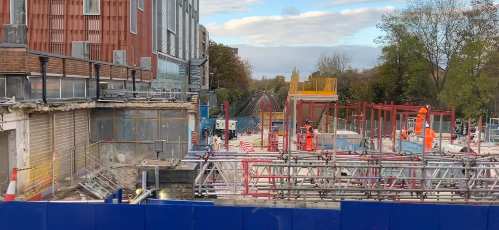

November in the Community
As the crisp autumn air settled over Colindale Gardens, the residents of this vibrant community continued to navigate the rhythms of daily life, all while sharing their triumphs, challenges, and occasional frustrations in the ever-active group chat. From the mundane to the memorable, November was a month filled with practical problem-solving, community spirit, and a few surprises along the way. Let’s dive into the key themes, events, and moods that defined this month.
Main Topics and Recurring Themes
If there’s one thing that stood out in November, it was the group chat’s role as a community hub for practical advice and recommendations. Whether it was finding a reliable handyman, troubleshooting household issues, or seeking recommendations for local services, the chat was buzzing with helpful suggestions. Renata, the cleaning lady, emerged as a recurring hero, with multiple residents sharing her contact details and singing her praises. Similarly, the recommendation for a driving instructor, Pramod, sparked a wave of interest, highlighting how the group often serves as a trusted network for local expertise.
Another prominent theme was transportation and infrastructure, particularly the long-awaited reopening of Colindale Station. The station’s progress (or lack thereof) was a hot topic, with residents eagerly sharing updates and speculating about the timeline. The mix of hope and skepticism was palpable—would the station really reopen in December, or would delays push it into the new year? This ongoing discussion underscored how much the community relies on this vital transport link.
Household maintenance also dominated the chat, with residents troubleshooting everything from broken dishwashers and underfloor heating to malfunctioning windows and shower heads. The collective knowledge of the group shone through, with residents offering DIY tips, sharing contacts for repair services, and even debating the merits of Timpson for key duplication. It was a reminder of how much we rely on each other for practical solutions.
Timeline of Key Events
Let’s take a chronological stroll through November’s standout moments:
- November 1: The month kicked off with updates on Colindale Station’s reopening timeline, sparking a mix of excitement and skepticism. Meanwhile, a lost cat outside Quassia House brought neighbors together, with "Resident AS" stepping up to reunite the feline with its owners.
- November 5: Bonfire Night fireworks sparked a debate about safety and legality, particularly when someone set them off on private land. The incident highlighted the community’s vigilance and concern for safety.
- November 6: "Resident J" shared a glowing recommendation for Pramod, a driving instructor who had helped multiple residents pass their tests. The post quickly became a go-to resource for anyone looking to learn to drive.
- November 13: A mysterious yellow ribbon sighting sparked curiosity and a brief, cryptic discussion. While the admins shut down the conversation to avoid political debates, the incident left many residents intrigued.
- November 14: A heated discussion about rising service charges revealed growing frustration among residents. Many shared their experiences of escalating costs, prompting calls for collective action to address the issue.
- November 20: The group chat expanded its utility with the creation of a walking group, thanks to "Resident S"'' initiative. The new group promised to foster connections beyond the digital realm.
- November 25: Updates on Colindale Station’s progress continued to dominate the chat, with residents sharing photos and videos of the ongoing work. The mix of hope and skepticism remained a constant theme.
- November 29: A lighthearted moment emerged when "Resident F" shared a photo of a delivery notification that failed to specify where her package had been left. The post sparked laughter and solidarity, as many could relate to the frustration of vague delivery updates.
General Mood and Sentiment
The chat had a practical and community-minded vibe, with plenty of humor and friendly banter mixed in. While there were moments of frustration—whether about rising service charges, delayed station reopenings, or unreliable Royal Mail pickups—the overall feeling was one of mutual support. Residents consistently stepped up to help each other, whether by sharing contacts, offering advice, or simply lending a sympathetic ear.
The chat also had its share of lighthearted moments, from the lost cat saga to the ongoing banter about fireworks and delivery mishaps. A surprise offer from Eclaire Cakes—a cancelled order of a six-piece chocolate cupcake box, originally £22 but reduced to £15—was a delightful highlight. Residents who managed to grab a box commented that the cupcakes were gorgeous, adding a sweet note of positivity to the group. These moments of levity helped balance the more serious discussions and reinforced the sense of community.
That said, there were occasional flashes of tension, particularly around sensitive topics like the yellow ribbons and rising service charges. The admins’ efforts to maintain a respectful and focused environment were evident, though not always universally appreciated. These moments served as a reminder of the challenges of managing a diverse and active community group.
Interesting Insights and Surprises
One of the most striking aspects of the November chat was the depth of collective knowledge within the community. From plumbing tips to driving instructor recommendations, the group proved to be a treasure trove of practical advice. It was also fascinating to see how quickly certain topics—like the station reopening or service charge increases—could dominate the conversation, reflecting shared concerns and priorities.
Another surprising insight was the resilience and adaptability of the community. Whether dealing with household emergencies, road closures within the development, transportation woes, or bureaucratic frustrations, residents consistently demonstrated a willingness to help each other and find solutions. This spirit of collaboration was a recurring theme throughout the month.

Looking Ahead
As November drew to a close, the chat remained as active as ever, with residents already looking ahead to December. The anticipated reopening of Colindale Station loomed large, promising to bring both relief and new challenges. Meanwhile, the creation of the walking group hinted at a growing desire for more in-person connections, suggesting that the community’s bonds are only set to strengthen.
In many ways, the November chat was a microcosm of life in Colindale Gardens: practical, collaborative, and occasionally chaotic, but always underpinned by a strong sense of community. As we move into the festive season, it’s clear that this vibrant group will continue to support, inform, and entertain each other—one message at a time.
So, what will December bring? More station updates, perhaps a few holiday mishaps, and undoubtedly more moments of community spirit. Stay tuned!